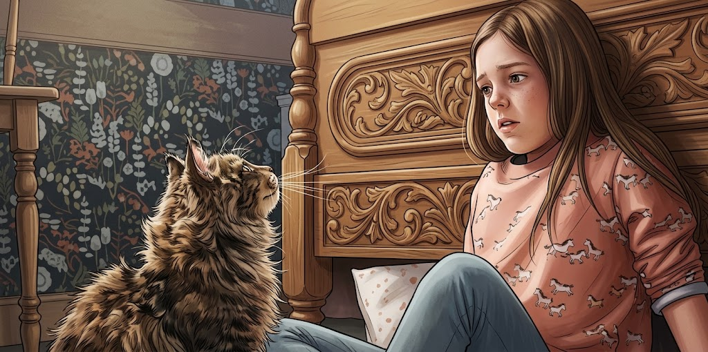

Once Upon a Page
Once Upon a Page

Pet Sematary
A family moves to a quiet house in Maine and discovers a burial ground behind it with a terrible power.
A New Home

Louis Creed, who had lost his father at three and who had never known a grandfather, never expected to find a father as he entered his middle age, but that was exactly what happened … although he called this man a friend, as a grown man must do when he finds the man who should have been his father relatively late in life. He met this man on the evening he and his wife and his two children moved into the big white frame house in Ludlow. Winston Churchill moved in with them. Church was his daughter Eileen’s cat.
The search committee at the University had moved slowly, the search for a house within commuting distance of the University had been hair-raising, and by the time they neared the place where he believed the house to be (all the landmarks are right … like the astrological signs the night before Caesar was assassinated, Louis thought morbidly,) they were all tired and tense and on edge.
Gage was cutting teeth and fussed almost ceaselessly. He would not sleep no matter how much Rachel sang to him. She offered him the breast even though it was off his schedule.
Gage knew his dining schedule as well as she – better, maybe – and he promptly bit her with his new teeth. Rachel, still not entirely sure about this move to Maine from Chicago, where she had lived her whole life, burst into tears.
Eileen joined her, apparently in some sort of mystic feminine sympathy. In the back of the station wagon, Church continued to pace restlessly as he had done for the last three days it had taken them to drive here from Chicago. His yowling from the cat-kennel had been bad, but his restless pacing after they finally gave up and set him free in the car had been almost as unnerving.
Louis himself felt a little like crying. A wild but not unattractive idea suddenly came to him: he would suggest that they go back to Bangor for something to eat while they waited for the moving van, and when his three hostages to fortune got out, he would floor the accelerator and drive away without so much as a look back, foot to the mat, the wagon’s huge four-barrel carburetor gobbling expensive gasoline.
He would drive south, all the way to Orlando, Florida, where he would get a job at Disney World as a medic, under a new name. But before he hit the turnpike – big old 95 southbound – he would stop by the side of the road and put the fucking cat out, too.
Then they rounded a final curve and there was the house that only he had seen up until now. He had flown out and looked at each of the seven possibles they had picked from photos once the position at the University was solidly his, and this was the one he had chosen: a big old New England colonial (but newly sided and insulated; the heating costs, while horrible enough, were not out of line in terms of consumption), three big rooms downstairs, four more up, a long shed that might be converted to more rooms later on, all of it surrounded by a luxuriant sprawl of lawn, lushly green even in this August heat.
Beyond the house was a large field for the children to play in, and beyond the field were woods that went on damn near for ever. The property abutted state lands, the realtor had explained, and there would be no development in the foreseeable future.
The remains of the Micmac Indian tribe had laid claim to nearly 8,000 acres in Ludlow, and in the towns east of Ludlow, and the complicated litigation, involving the Federal government as well as that of the state, might stretch into the next century.
Rachel stopped crying abruptly. She sat up. ‘Is that—’
‘That’s it,’ Louis said. He felt apprehensive – no, he felt scared. In fact he felt terrified. He had mortgaged twelve years of their lives for this; it wouldn’t be paid off until Eileen was seventeen, an unbelievable age.
He swallowed.
‘What do you think?’
‘I think it’s beautiful,’ Rachel said, and that was a huge weight off his chest – and off his mind. She wasn’t kidding, he saw; it was in the way she was looking at it as they turned in the asphalted driveway that swept around to the shed in back, her eyes sweeping the blank windows, her mind already ticking away at such matters as curtains and oilcloth for the cupboards and God knew what else.
‘Daddy?’ Eileen said from the back seat. She had stopped crying as well. Even Gage had stopped fussing. Louis savored the silence.
‘What, love?’
Her eyes, brown under darkish blonde hair in the rear-view mirror, also surveying the house: the lawn, the roof of a house seen off to the left in the distance, the big field stretching up to the woods.
‘Is this home?’
‘It’s going to be, honey,’ he said.
‘Hooray!’ she shouted, almost taking his ear off. And Louis, who could sometimes become very irritated with Eileen, decided he didn’t care if he never clapped an eye on Disney World in Orlando.
He parked in front of the shed and turned off the wagon’s motor.
The engine ticked. In the silence, which seemed very big after Chicago and the bustle of State Street and the Loop, a bird sang sweetly in the late afternoon.‘Home,’ Rachel said softly, still looking at the house.
‘Home,’ Gage said complacently on her lap.
Louis and Rachel stared at each other. In the rear-view mirror, Eileen’s eyes widened.
‘Did you—’
‘Did he—’
‘Was that—’
They all spoke together, then all laughed together. Gage took no notice; only sucked his thumb. He had been saying ‘Ma’ for almost a month now, and had taken a stab or two at something that might have been ‘Daaa’ or only wishful thinking on Louis’s part.
But this, either by accident or imitation, had been a real word.
Home.
Louis plucked Gage from his wife’s lap and hugged him.
That was how they came to Ludlow.